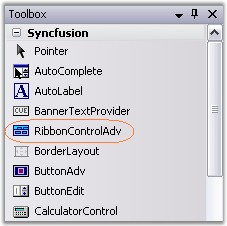
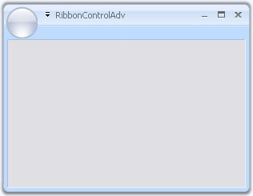
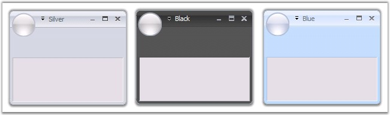
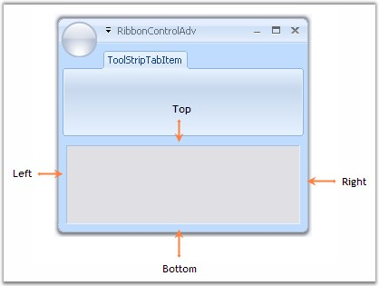
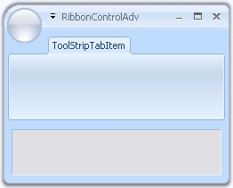

EssentialStudio now gives a similar look and feel of MS Office 2007, to its Office 2007 controls, using RibbonControlAdv which comes with rounded corners. This section will guide you in creating a Ribbon form using RibbonControlAdv.
Creating Ribbon Form
1. Drag and drop the RibbonControlAdv on to the form.

Figure 1300: RibbonControlAdv in the Toolbox
2. To convert an ordinary form to Ribbon form, do the following.
The forms in the application by default will extend to the Form class. Add the respective namespace and programmatically change it as RibbonForm class.
|
[C#]
using Syncfusion.Windows.Forms.Tools; public partial class Form1 : RibbonForm |
|
[VB.NET]
Imports Syncfusion.Windows.Forms.Tools Partial Public Class Form1 Inherits RibbonForm |

Figure 1301: Windows Form Converted to Ribbon Form
This section discusses various appearance and behavior settings of the Ribbon form.
Appearance Settings
The appearance of the ribbon form can be controlled using the below properties.
|
Description | |
|
Appearance |
Sets the appearance of the form. The values are,
· Normal and · Office2007 (Default) · Office 2010 |
|
ColorScheme |
Specifies the office color scheme of the Ribbon form. The color schemes are,
· Blue, · Black, · Silver and · Managed (Default). |
|
[C#]
this.Appearance = AppearanceType.Office2007; this.ColorScheme = ColorSchemeType.Blue; |
|
[VB.NET]
Me.Appearance = AppearanceType.Office2007 Me.ColorScheme = ColorSchemeType.Blue |

Figure 1302: Silver, Black and Blue Color Schemes applied to Office2007Style Ribbon Forms
Vista Aero Theme
Vista Aero theme support is available for Ribbon Form when used in Vista machine.
Figure 1303: Vista Aero Theme for Ribbon Form
The property which lets you set borders for the Office2007Style form is as follows.
|
Property |
Description |
|
Borders |
Gets/sets the border values of an Office 2007 style form. Sets borders for Left, Top, Right and Bottom sides of the form. |
|
[C#]
this.Borders = new System.Windows.Forms.Padding(10); |
|
[VB.NET]
Me.Borders = New System.Windows.Forms.Padding(10) |

Figure 1304: Left, Top, Right and Bottom Sides set with Border = "10"
Customizing the Top Left Edge
This TopLeftRadius property gets/sets the curved radius of the top left edge of the form. Default is 8.
|
[C#]
this.TopLeftRadius = 20; |
|
[VB.NET]
Me.TopLeftRadius = 20 |

Figure 1305: Top-Left Edge Curved to Radius "20"